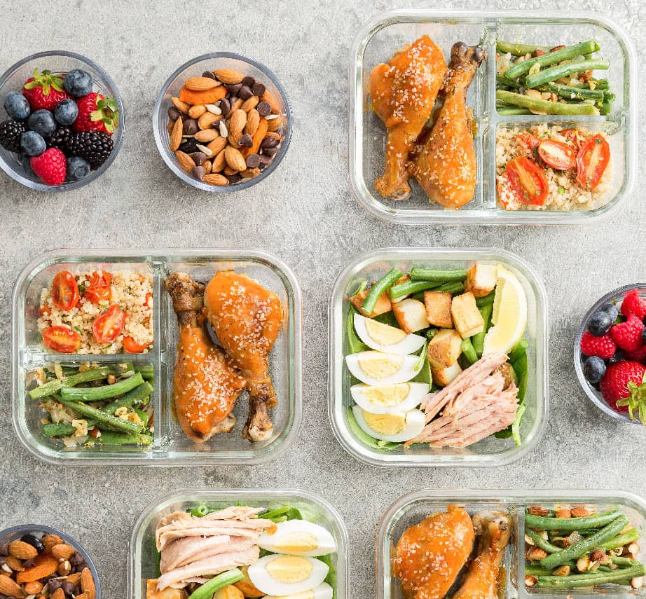
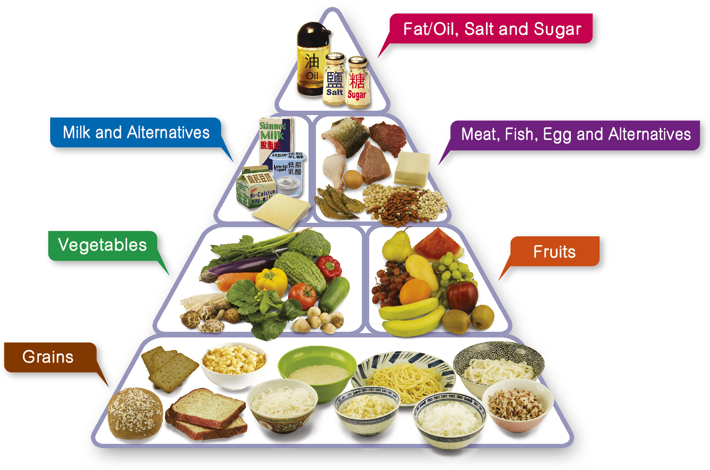

今日の食事を記録する
あなたの食事内容を入力して、足りない栄養をチェック！
➡ 食事を記録する
食事グループについて学ぶ
穀類・タンパク質・野菜・果物・乳製品・脂質の6つのグループを学ぼう。
➡ 詳しく見る
食事履歴を見る
これまでに記録した食事内容と栄養バランスを確認できます。
➡ 履歴を見る毎日の食事を記録して、健康的な食生活をサポート！

あなたの食事内容を入力して、足りない栄養をチェック！
➡ 食事を記録する
穀類・タンパク質・野菜・果物・乳製品・脂質の6つのグループを学ぼう。
➡ 詳しく見る
これまでに記録した食事内容と栄養バランスを確認できます。
➡ 履歴を見る